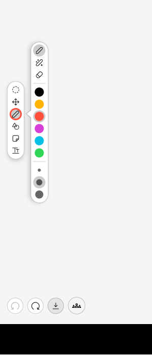
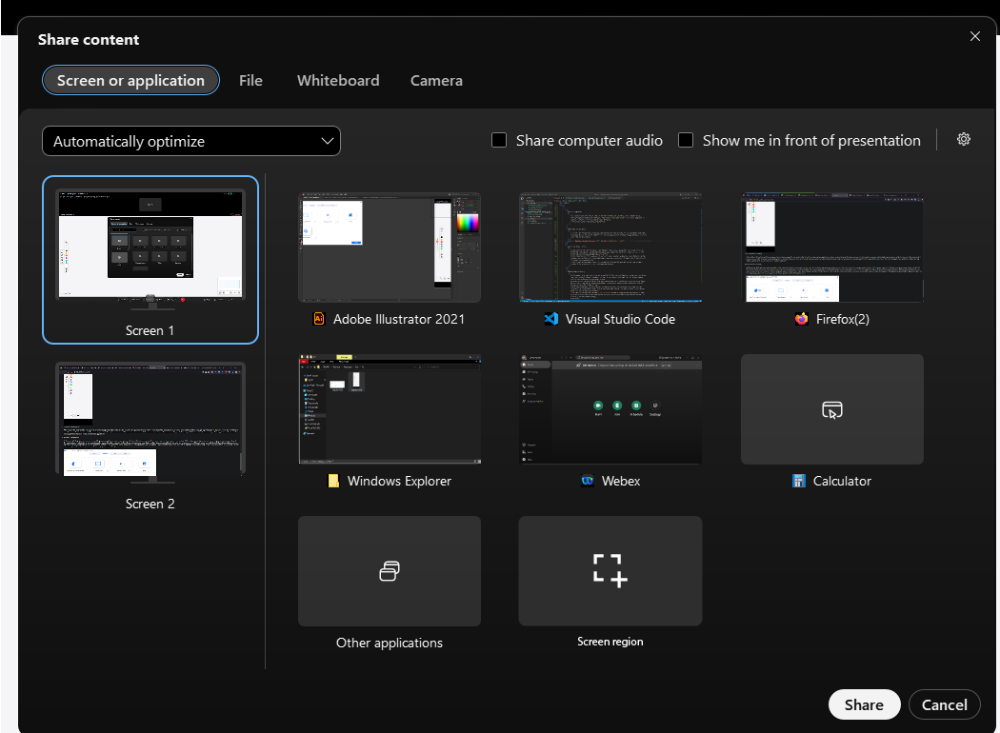
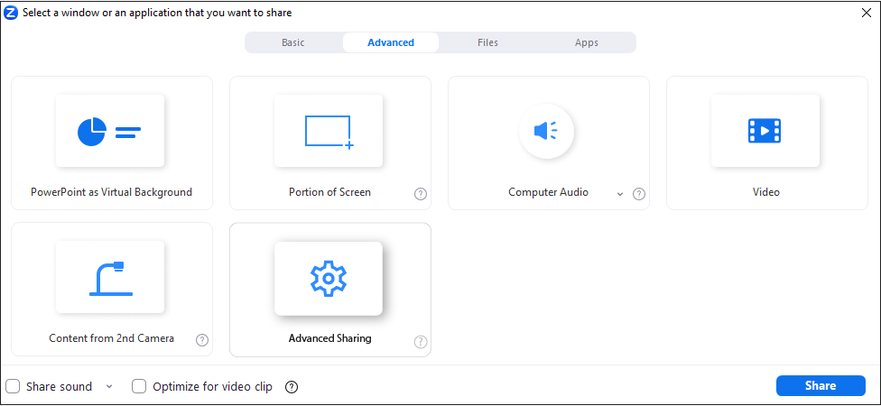

Affordances
Visual variables
Interaction flow


The image above is showing the bar of actions for Webex(left) and Zoom(right). The visual metaphors and idioms are fairly similar, like the mute/unmute and start/stop video buttons. The same is for the share and record buttons. Webex has a quick button for raising a hand, while in Zoom all the reactions are placed in the Reactions menu (so one click to raise a hand in Webex vs. 2 clicks in Zoom). Webex has a "More options" idiom, with the visual metaphor of 3 dots. For the "Exit the meeting" button Webex has just a visual metaphor, meanwhile Zoom has a red button with the idiom "End". The same if for the "Apps", "Participants" and "Chat" options, Webex having just the visual metaphors, while Zoom has both idioms and visual metaphors. Zoom has a "Whiteboard" option in the tools bar, while Webex has it stored in the "Share" button. All the visual metaphors and idioms are fairly similar.
For the text-only interaction part, supposing that every interaction possible with the app would be possible in text-only (for example if the user wants to open the gallery of participants a new window will appear), all the commands would be:
The apps are quite easy to understand and work with, with 3 colors, pretty good idioms and visual metaphors, the menus do not have too many options and are not cascading. So, it can be said that Webex and Zoom are pretty intuitive apps.
Some special contexts where cognitive overload could appear would be when every participant has a camera on, microphone on and is sharing some content. Also, the chat is heavily used and a normal user can't see all the messages. So it can get quite annoying for a user. Both Webex and Zoom have meeting settings that can prevent most of this previously said occurrences. For example, the owner of the meeting can choose if a user can share some content at all or if multiple participants can share a screen at the same time. Also, the owner can mute all the participants if needed. For example Zoom has the Security menu, where the owner can set what a user can or can not do, like unmuting themselves, start their video camera or sharing content. With this option, the cognitive overload can be reduced drastically for all the participants.
While both Zoom and Webex are applications used world wide to hold meetings ranging from personal to professional use, they do not provide an ideal user experience.
Starting off with Zoom, the mobile application has a completely different design from the desktop one, in order to accommodate with the smaller screen size and the possible use cases. Both the mobile and desktop apps focus on communication (verbal through audio-video transmission or non-verbal through screen sharing), however the desktop app is more modular (some UI elements are popups and others open menus that do not obstruct the current presentation/participants' video). Which is why the mobile app has the following flaws:
Tapping on the "chat" button completely hides the previous screen and replaces it with a new one. From this new screen it is impossible to see the current presentation or the other meeting members. Sending or even just reading messages sent by other users block one's capability to participate to the meeting, thus possibly making them miss important details.
A solution to combat this issue would be to make the chat menu a popup, maybe a bubble like those implemented in Android 11, or to split the screen to allow the user to see the chat and the meeting at the same time.
Privacy indicators are a new addition to Android (version 12+) and iOs (version 14+) and they let the user know whenever an app is using either the microphone or the camera by showing an indicator in the status bar. Users tend to concerned if the indicator appears when they are not expecting it, and unfortunately Zoom falls into this trap too. The microphone dot remains visible even if the user is muted, a user might think that they can still be heard and become paranoid.
The simple way to resolve this problem is to drop the resources allocated for the microphone once the user has been muted for a given time (at least 5 seconds should be fine). This way, if the user accidentally muted themselves, the app would not drop and reacquire resources for the microphone control, but only do so in scenarios where the behavior was intentional.
As for the UI, most of the menus are consistent with those of the operating system, however, the "schedule" menu that can be accessed from the main screen and is used especially by those who want to host a meeting has a striking iOs-like look. The text categories, option toggles, date/time picker look like they copied the iOs design and made it available for Android. This makes the interface inconsistent, the users are expecting the interface to look a certain way, but may become confused when looking at this alien alternative.
They could have instead used an interface similar to the Google Calendar event planning menu, but this would make the applications have different interfaces. So a better solution would be to make a new interface that can be used for both applications, a minimal interface that is easy to understand and use regardless of the platform.
Fitt's law predicts the time required to quickly move to a target area, such as a button or a menu item, as a function of the distance to the target and the size of the target. The time required to move to a target id proportional to the distance to the target and inversely proportional to the size of the target. So the closer and bigger the target is, the smaller the time needed.
Multi-device interaction can be used to enhance the user experience of the Zoom/Webex application in several ways, including enabling multi device screen sharing. This could allow users to share their screen during a call from any device, making it easier to collaborate and present information. For example, a user could start sharing their screen from their laptop, and then switch to their tablet to draw on a presentation or highlight key points. Or they can use a phone's microphone and front facing camera for the meeting, and a desktop for screen sharing.
If a user needs to switch between different devices while screen sharing, the buttons or controls that allow them to do so should be large and easy to locate. They should also be placed in a location that is easily accessible and intuitive for the user. This could mean placing the buttons in a fixed location on the screen or adapting their placement based on the device being used.
Hick's law is a psychological principle in human-computer interaction that describes the relationship between the number of options presented to a user and the time it takes for them to make a decision. Specifically, Hick's law states that as the number of options increases, the time it takes to make a decision also increases logarithmically.
To avoid this problem, designers should aim to simplify the user interface and reduce the number of options presented to the user. This can be achieved by grouping similar options together, using clear and concise language to describe each option, and providing visual cues and affordances to help guide the user's attention to important options.
For example, presenting too many device options to switch between or too many controls to adjust the screen size or layout could overwhelm the user and increase decision-making time. Instead of presenting every device option available for screen sharing, designers could limit the options to only those devices that are currently connected or within a certain proximity.
Steering's law, also known as the reciprocal tapping task, is a fundamental principle in human-computer interaction that describes the relationship between the width of a target and the speed and accuracy of movement towards that target. The law states that the time taken to steer a cursor or pointer towards a target is a function of the distance to the target and the width of the target. Specifically, the law states that as the width of the target increases, movement time decreases, while accuracy increases.
Steering's law has important implications for the design of user interfaces, particularly for the placement and sizing of interactive elements, such as buttons and links. By designing buttons and other interactive elements with an appropriate size and spacing, designers can improve both the speed and accuracy with which users interact with these elements.
For example, designers could use larger and more easily distinguishable icons to represent different device options or controls for adjusting the screen size or layout. They could also ensure that interactive elements are placed in locations that are easily accessible and intuitive for the user, such as in a fixed location on the screen or adapted based on the user's device and screen size. This will also ensure that users do not accidentally share the screen of a device they don't indent to, or don't use the camera from a device other than the ones they want.
Both Zoom and Webex are improving day by day, but some there are some features that might make a bigger difference than others:
A feature completely missing from both applications that could be added is a collaborative whiteboard. This would allow users to work together on a shared digital canvas during meetings, making it easier to brainstorm and share ideas. A collaborative whiteboard can encourage participants to actively engage in the conversation by allowing them to share their ideas and collaborate with others. It can also make online meetings feel more interactive and dynamic, leading to higher levels of participation and engagement. A collaborative whiteboard can streamline the meeting process by allowing participants to share their ideas and work collaboratively, in real-time. This can save time and reduce misunderstandings and miscommunications.
A third feature that could be added is an improved screen sharing capability. This could include the ability to share specific application windows or tabs rather than the entire screen, as well as the ability to annotate and highlight important points on the shared screen. This would make it easier for users to share information and collaborate during meetings. Sharing the entire screen might expose personal or unwanted information and it makes it hard to present something while also having to look at some notes. This can be mitigated if the applications allowed for only sharing a portion of the screen or only one or multiple applications.
At the moment, both applications use the resolution of the person sharing their screen and a low frame rate. This is ideal in most situations, as there is no need for more frame rate for a presentation, which is why resolution is prioritized. However, designers and art creators will not find this functionality to be sufficient if they are presenting a gif or a short clip and are requesting feedback. Frame rate is important when sharing this kind of media, but resolution is not. In the case of game developers, 3D model artists, or special effects, both resolution and frame rate are important, but a third metric might be even more important: bitrate. It doesn't matter if the shared content is full hd with high framerate, if the image has compression artifacts, you can be sure nobody is going to understand anything. Both applications should add an "Advanced" option for screen sharing that allows the user to customize all of these properties before sharing their screen.
